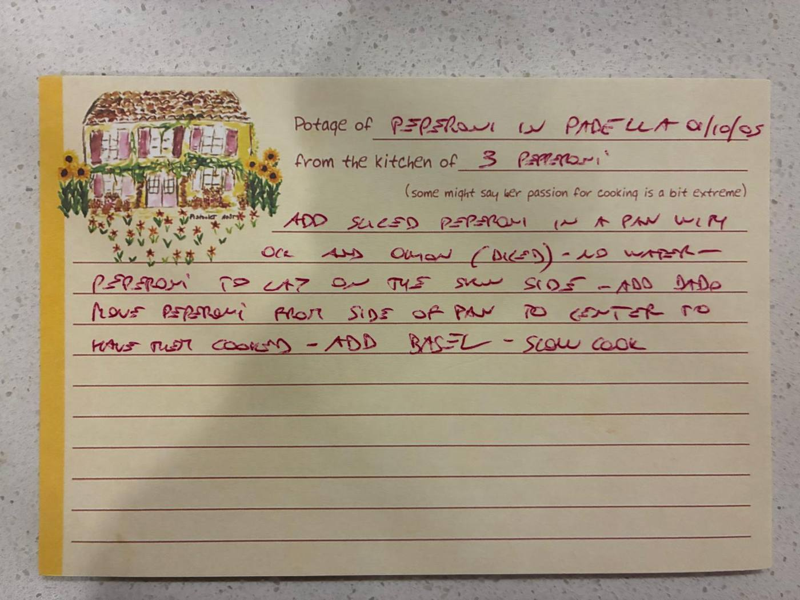

Breads & Sides
Peperoni in Padella
Pan-Cooked Peppers
From the kitchen of Mom
CookSlow, on the stove

Mom's original card · tap to enlarge
Ingredients
Method tap a step to mark it done
- Put the sliced peppers in a pan with the oil and diced onion. No water.
- Lay the peppers skin side down. Add the dado.
- Move the peppers from the sides of the pan to the center so they all cook.
- Add basil and cook slowly.